4 DVS y reducción de dimensionalidad
En esta parte veremos técnicas de reducción de dimensionalidad por medio de proyecciones lineales, que buscan preservar la mayor parte de la información contenida en los datos originales. En particular veremos la descomposición en valores singulares, que es una de las más útiles.
La descomposición en valores singulares puede verse como un tipo de descomposición aditiva en matrices de rango uno, así que comenzaremos explicando estos conceptos.
4.1 Descomposición aditiva en matrices de rango 1
Supongamos que tenemos una matriz de datos \(X\) de tamaño \(n\times p\) (todas son variables numéricas). En los renglones tenemos los casos (\(n\)) y las columnas son las variables \(p\). Típicamente pensamos que las columnas o variables están todas definidas en una misma escala: por ejemplo, cantidades de dinero, poblaciones, número de eventos, etc. Cuando no es así, entonces normalizamos las variables de alguna forma para no tener unidades.
4.1.1 Matrices de rango 1
Una de las estructuras de datos más simples que podemos imaginar (que sea interesante) para un tabla de este tipo es que se trata de una matriz de datos de rango 1. Es generada por un score de individuos que determina mediante un peso el valor de una variable. Es decir, el individuo \(i\) en la variable \(j\) es
\[X_{ij} = \sigma u_i v_j\]
Donde \(u=(u_1,u_2,\ldots, u_n)\) son los scores de los individuos y \(v = (v_1, v_2, \ldots, v_p)\) son los pesos de las variables. Tanto \(u\) como \(v\) son vectores normalizados, es decir \(||u||=||v||=1\). La constante \(\sigma\) nos permite pensar que los vectores \(u\) y \(v\) están normalizados.
Esto se puede escribir, en notación matricial, como
\[X = \sigma u v^t\] donde consideramos a \(u\) y \(v\) como matrices columna.
Una matriz de rango uno (o en general de rango bajo) es más simple de analizar. En rango 1, tenemos que entender la variación de \(n+p\) datos (componentes de \(u\) y \(v\)), mientras que en una matriz general tenemos que entender \(n\times p\) datos.
Cada variable \(j\) de las observaciones es un reescalamiento del índice o score \(u\) de las personas por el factor \(\sigma v_j\). Igualmente, cada caso \(i\) de las observaciones es un reescalamiento del índice o peso \(v\) de las variables por el factor \(\sigma u_i\).
\(u\) y \(v\) representan una dimensión (dimensión latente, componente) de estos datos.
Ejemplo: una matriz de rango 1 de preferencias
Supongamos que las columnas de \(X\) son películas (\(p\)), los renglones (\(n\)) personas, y la entrada \(X_{ij}\) es la afinidad de la persona \(i\) por la película \(j\). Vamos a suponer que estos datos tienen una estructura ficticia de rango 1, basada en las preferencias de las personas por películas de ciencia ficción.
Construimos los pesos de las películas que refleja qué tanto son de ciencia ficción o no. Podemos pensar que cada uno de estos valores el el peso de la película en la dimensión de ciencia ficción.
library(tidyverse)
peliculas_nom <- c('Gladiator','Memento','X-Men','Scream','Amores Perros',
'Billy Elliot', 'Lord of the Rings','Mulholland drive',
'Amelie','Planet of the Apes')
# variable latente que describe el contenido de ciencia ficción de cada
v <- c(-1.5, -0.5, 4, -1,-3, -3, 0, 1, -0.5, 3.5)
normalizar <- function(x){
norma <- sqrt(sum(x^2))
if(norma > 0){
x_norm <- x/norma
} else {
x_norm <- x
}
x_norm
}
v <- normalizar(v)
peliculas <- tibble(pelicula = peliculas_nom, v = v) |> arrange(v)
peliculas## # A tibble: 10 × 2
## pelicula v
## <chr> <dbl>
## 1 Amores Perros -0.420
## 2 Billy Elliot -0.420
## 3 Gladiator -0.210
## 4 Scream -0.140
## 5 Memento -0.0700
## 6 Amelie -0.0700
## 7 Lord of the Rings 0
## 8 Mulholland drive 0.140
## 9 Planet of the Apes 0.490
## 10 X-Men 0.560Ahora pensamos que tenemos con individuos con scores de qué tanto les gusta la ciencia ficción
set.seed(102)
u <- rnorm(15, 0, 1)
u <- normalizar(u)
personas <- data_frame(persona = 1:15, u = u)## Warning: `data_frame()` was deprecated in tibble 1.1.0.
## Please use `tibble()` instead.
## This warning is displayed once every 8 hours.
## Call `lifecycle::last_lifecycle_warnings()` to see where this warning was generated.head(personas)## # A tibble: 6 × 2
## persona u
## <int> <dbl>
## 1 1 0.0422
## 2 2 0.183
## 3 3 -0.316
## 4 4 0.463
## 5 5 0.289
## 6 6 0.280Podemos entonces construir la afinidad de cada persona por cada película (matriz \(n\times p\) ) multiplicando el score de cada persona (en la dimensión ciencia ficción) por el peso de la película (en la dimensión ciencia ficción). Por ejemplo, para una persona, tenemos que su índice es
personas$u[2]## [1] 0.1832537Esta persona tiene afinidad por la ciencia ficción, así que sus niveles de gusto por las películas son (multiplicando por \(\sigma = 100\), que en este caso es una constante arbitraria seleccionada para el ejemplo):
tibble(pelicula=peliculas$pelicula,
afinidad= 100*personas$u[2]*peliculas$v) |>
arrange(desc(afinidad))## # A tibble: 10 × 2
## pelicula afinidad
## <chr> <dbl>
## 1 X-Men 10.3
## 2 Planet of the Apes 8.98
## 3 Mulholland drive 2.57
## 4 Lord of the Rings 0
## 5 Memento -1.28
## 6 Amelie -1.28
## 7 Scream -2.57
## 8 Gladiator -3.85
## 9 Amores Perros -7.70
## 10 Billy Elliot -7.70Consideremos otra persona
personas$u[15]## [1] -0.05320133Esta persona tiene disgusto ligero por la ciencia ficción, y sus scores de las películas son:
tibble(pelicula = peliculas$pelicula,
afinidad = 100 * personas$u[15] * peliculas$v)## # A tibble: 10 × 2
## pelicula afinidad
## <chr> <dbl>
## 1 Amores Perros 2.23
## 2 Billy Elliot 2.23
## 3 Gladiator 1.12
## 4 Scream 0.745
## 5 Memento 0.372
## 6 Amelie 0.372
## 7 Lord of the Rings 0
## 8 Mulholland drive -0.745
## 9 Planet of the Apes -2.61
## 10 X-Men -2.98Si fuera tan simple el gusto por las películas (simplemente depende si contienen ciencia ficción o no, y si a la persona le gusta o no), la matriz \(X\) de observaciones sería
\[X_1 = \sigma uv^t\] donde consideramos a \(u\) y \(v\) como vectores columna. El producto es de una matriz de \(n\times 1\) contra una de \(1\times p\), lo cual da una matriz de \(n\times p\).
Podemos calcular como:
X = 100 * tcrossprod(personas$u, peliculas$v) # tcrossprod(x,y) da x %*% t(y)
colnames(X) <- peliculas$pelicula
head(round(X, 1))## Amores Perros Billy Elliot Gladiator Scream Memento Amelie
## [1,] -1.8 -1.8 -0.9 -0.6 -0.3 -0.3
## [2,] -7.7 -7.7 -3.8 -2.6 -1.3 -1.3
## [3,] 13.3 13.3 6.6 4.4 2.2 2.2
## [4,] -19.5 -19.5 -9.7 -6.5 -3.2 -3.2
## [5,] -12.1 -12.1 -6.1 -4.0 -2.0 -2.0
## [6,] -11.8 -11.8 -5.9 -3.9 -2.0 -2.0
## Lord of the Rings Mulholland drive Planet of the Apes X-Men
## [1,] 0 0.6 2.1 2.4
## [2,] 0 2.6 9.0 10.3
## [3,] 0 -4.4 -15.5 -17.7
## [4,] 0 6.5 22.7 25.9
## [5,] 0 4.0 14.2 16.2
## [6,] 0 3.9 13.7 15.7O usando una tabla
peliculas |> crossing(personas) |>
mutate(afinidad = round(100 * u * v, 2)) |>
select(persona, pelicula, afinidad) |>
pivot_wider(names_from = pelicula, values_from = afinidad) ## # A tibble: 15 × 11
## persona Amelie `Amores Perros` `Billy Elliot` Gladiator `Lord of the Rings`
## <int> <dbl> <dbl> <dbl> <dbl> <dbl>
## 1 1 -0.3 -1.77 -1.77 -0.89 0
## 2 2 -1.28 -7.7 -7.7 -3.85 0
## 3 3 2.21 13.3 13.3 6.64 0
## 4 4 -3.24 -19.5 -19.5 -9.73 0
## 5 5 -2.02 -12.2 -12.2 -6.07 0
## 6 6 -1.96 -11.8 -11.8 -5.89 0
## 7 7 -1.47 -8.79 -8.79 -4.4 0
## 8 8 -0.41 -2.49 -2.49 -1.24 0
## 9 9 -0.9 -5.39 -5.39 -2.7 0
## 10 10 -3.11 -18.7 -18.7 -9.34 0
## 11 11 -2.36 -14.2 -14.2 -7.09 0
## 12 12 -0.19 -1.13 -1.13 -0.57 0
## 13 13 1.03 6.15 6.15 3.08 0
## 14 14 2.08 12.4 12.4 6.23 0
## 15 15 0.37 2.23 2.23 1.12 0
## # … with 5 more variables: Memento <dbl>, Mulholland drive <dbl>,
## # Planet of the Apes <dbl>, Scream <dbl>, X-Men <dbl>Nótese que en este ejemplo podemos simplificar mucho el análisis: en lugar de ver la tabla completa, podemos simplemente considerar los dos vectores de índices (pesos y scores), y trabajar como si fuera un problema de una sola dimensión.
4.2 Aproximación con matrices de rango 1.
En general, las matrices de datos reales no son de rango 1. Más bien nos interesa saber si se puede hacer una buena aproximación de rango 1.
Medimos la diferencia entre una matriz de datos general \(X\) y una matriz de rango 1 \(\sigma uv^t\) mediante la norma Frobenius:
\[ ||X-\sigma uv^t||^2_F = \sum_{i,j} (X_{i,j} - \sigma u_iv_j)^2\]
Nos interesa resolver
\[\min_{\sigma, u,v} || X - \sigma uv^t ||_F^2\]
donde \(\sigma\) es un escalar, \(u\) es un vector columna de tamaño \(n\) y \(v\) es un vector columna de tamaño \(p\). Suponemos que los vectores \(u\) y \(v\) tienen norma uno. Esto no es necesario - podemos absorber constantes en \(\sigma\).
Ejemplo
Por ejemplo, la siguiente tabla tiene gastos personales en distintos rubros en distintos años para todo Estados Unidos (en dólares nominales).
library(tidyverse)
X_arr <- USPersonalExpenditure[, c(1,3,5)]
X_arr## 1940 1950 1960
## Food and Tobacco 22.200 59.60 86.80
## Household Operation 10.500 29.00 46.20
## Medical and Health 3.530 9.71 21.10
## Personal Care 1.040 2.45 5.40
## Private Education 0.341 1.80 3.64En este ejemplo podríamos tener la intuición de que las proporciones de gasto se han mantenido aproximadamente constante en cada año, y que todos los rubros han aumentado debido a la inflación. Podríamos intentar hacer varias normalizaciones para probar esta idea, pero quisiéramos idear una estrategia general.
Digamos que el vector \(u\) denota los niveles generales de cada rubro (es un vector de longitud 5), y el vector \(v\) denota los niveles generales de cada año (un vector de longitud 3). Queremos ver si es razonable aproximar \[X\approx uv^t\]
Observación: En este caso, la ecuación de arriba \(X_{i,j} = u_iv_j\) expresa que hay niveles generales para cada rubro \(i\) a lo largo de todos los años, y para obtener una aproximación ajustamos con un factor \(v_j\) de inflación el año \(j\)
La mejor manera de entender este problema es con álgebra lineal, como veremos más adelante. Por el momento intentemos aproximar directamente, intentando resolver (podemos normalizar \(u\) y \(v\) más tarde y encontrar la \(\sigma\)):
\[\min_{u,v} \sum_{i,j} (X_{i,j} - u_iv_j)^2 = \min_{u,v} ||X-uv^t||^2_F\]
Observación:Este problema tiene varios mínimos, pues podemos mover constantes de \(u\) a \(v\) (tiene múltiples soluciones). Hay varias maneras de lidiar con esto (por ejemplo, normalizando). Por el momento, corremos la optimización para encontrar una solución:
error <- function(pars){
v <- pars[1:3]
u <- pars[4:8]
mean((X_arr - tcrossprod(u, v))^2) #tcrossprod da x %*% t(y)
}
optim_decomp <- optim(rep(0.1, 5 + 3), error, method ='BFGS')v_años <- optim_decomp$par[1:3]
u_rubros <- optim_decomp$par[4:8]La matriz \(X_1=uv^t\) que obtuvimos es:
X_1 <- tcrossprod(u_rubros, v_años)
round(X_1, 1)## [,1] [,2] [,3]
## [1,] 21.6 58.4 87.8
## [2,] 11.1 30.1 45.3
## [3,] 4.7 12.6 18.9
## [4,] 1.2 3.2 4.8
## [5,] 0.8 2.2 3.3Podemos ver qué tan buena es la aproximación:
R <- X_arr - X_1
qplot(as.numeric(X_1), as.numeric(as.matrix(X_arr))) + geom_abline(colour='red')
round(R,2)## 1940 1950 1960
## Food and Tobacco 0.60 1.25 -0.98
## Household Operation -0.65 -1.11 0.90
## Medical and Health -1.12 -2.87 2.18
## Personal Care -0.15 -0.77 0.55
## Private Education -0.46 -0.38 0.36donde vemos que nuestra aproximación es muy cercana a los datos en la tabla \(X\). La descomposición que obtuvimos es de la forma \[X = uv^t + R\] donde \(R\) tiene norma Frobenius relativamente chica.
Observaciones:
- Este método nos da un ordenamiento de rubros de gasto según su nivel general, y un ordenamiento de años según su nivel general de gasto.
tibble(rubro = rownames(X_arr), nivel = u_rubros) |> arrange(desc(nivel))## # A tibble: 5 × 2
## rubro nivel
## <chr> <dbl>
## 1 Food and Tobacco 9.74
## 2 Household Operation 5.03
## 3 Medical and Health 2.10
## 4 Personal Care 0.538
## 5 Private Education 0.363tibble(año = colnames(X_arr), nivel = v_años)## # A tibble: 3 × 2
## año nivel
## <chr> <dbl>
## 1 1940 2.22
## 2 1950 5.99
## 3 1960 9.01Pudimos explicar estos datos usando esos dos índices (5+3=7 números) en lugar de toda la tabla(5(3)=15 números).
Una vez explicado esto, podemos concentrarnos en los patrones que hemos aislado en la matriz \(R\). Podríamos repetir buscando una aproximación igual a la que acabomos de hacer para la matriz \(X\), o podríamos hacer distintos tipos de análisis.
4.2.1 Suma de matrices de rango 1.
La matriz de datos \(X\) muchas veces no puede aproximarse bien con una sola matriz de rango 1. Podríamos entonces buscar descomponer los datos en más de una dimensión latente:
\[X = \sigma_1 u_1v_1^t + \sigma_2 u_2v_2^t+\ldots+ \sigma_k u_kv_k^t\] Interpretamos cada término del lado derecho de la misma manera (cada uno de ellos es una matriz de rango uno), y los valores finales son una suma ponderada de estos términos.
Ejemplo: películas
En nuestro ejemplo anterior, claramente debe haber otras dimensiones latentes que expliquen la afinidad por una película. Por ejemplo, quizá podríamos considerar el gusto por películas mainstream vs películas independientes.
peliculas_nom <- c('Gladiator','Memento','X-Men','Scream','Amores Perros',
'Billy Elliot', 'Lord of the Rings','Mulholland drive',
'Amelie','Planet of the Apes')
# variable latente que describe el contenido de ciencia ficción de cada
v_1 <- c(-1.5, -0.5, 4, -1,-3, -3, 0, 1, -0.5, 3.5)
v_2 <- c(4.1, 0.2, 3.5, 1.5, -3.0, -2.5, 2.0, -4.5, -1.0, 2.6) #mainstream o no
v_1 <- normalizar(v_1)
v_2 <- normalizar(v_2)
peliculas <- tibble(pelicula = peliculas_nom, v_1 = v_1, v_2 = v_2) |>
arrange(v_2)
peliculas## # A tibble: 10 × 3
## pelicula v_1 v_2
## <chr> <dbl> <dbl>
## 1 Mulholland drive 0.140 -0.508
## 2 Amores Perros -0.420 -0.338
## 3 Billy Elliot -0.420 -0.282
## 4 Amelie -0.0700 -0.113
## 5 Memento -0.0700 0.0226
## 6 Scream -0.140 0.169
## 7 Lord of the Rings 0 0.226
## 8 Planet of the Apes 0.490 0.293
## 9 X-Men 0.560 0.395
## 10 Gladiator -0.210 0.462Y las personas tienen también scores en esta nueva dimensión, que aquí simulamos al azar
personas <- personas |>
mutate(u_1 = u, u_2 = normalizar(rnorm(15, 0, 1))) |>
select(-u)
head(personas)## # A tibble: 6 × 3
## persona u_1 u_2
## <int> <dbl> <dbl>
## 1 1 0.0422 -0.0623
## 2 2 0.183 -0.377
## 3 3 -0.316 0.420
## 4 4 0.463 -0.401
## 5 5 0.289 0.127
## 6 6 0.280 0.180Por ejemplo, la segunda persona persona le gusta la ciencia ficción, y pero prefiere fuertemente películas independientes.
Podemos graficar a las personas según su interés en ciencia ficción y mainstream:
ggplot(personas, aes(x = u_1, y=u_2)) + geom_point() +
geom_vline(xintercept = 0, colour='red') +
geom_hline(yintercept = 0, colour='red') + xlab('Ciencia ficción')+
ylab('Mainstream')
Y también podemos graficar las películas
ggplot(peliculas, aes(x = v_1, y=v_2, label = pelicula)) + geom_point() +
geom_vline(xintercept = 0, colour='red') +
geom_hline(yintercept = 0, colour='red')+ xlab('Ciencia ficción')+
ylab('Mainstream') + geom_text()
¿Cómo calculariamos ahora la afinidad de una persona por una película? Necesitamos calcular (dando el mismo peso a las dos dimensiones) \[X_{i,j} = \sigma_1 u_{1,i} v_{1,j} + \sigma_2 u_{2,i} v_{2,j}\]
Usamos la notación \(u_{k,i}\) para denotar la componente \(i\) del vector \(u_k\).
Antes pusimos \(\sigma_1=100\). Supongamos que la siguiente componente es un poco menos importante que la primera. Podriamos escoger \(\sigma_2=70\), por ejemplo.
Podríamos hacer
library(purrr)
library(stringr)
personas_larga <- personas |> gather(dimension, u, u_1:u_2) |>
separate(dimension, c('x','dim'), '_') |> select(-x)
head(personas_larga)## # A tibble: 6 × 3
## persona dim u
## <int> <chr> <dbl>
## 1 1 1 0.0422
## 2 2 1 0.183
## 3 3 1 -0.316
## 4 4 1 0.463
## 5 5 1 0.289
## 6 6 1 0.280peliculas_larga <- peliculas |> gather(dimension, v, v_1:v_2) |>
separate(dimension, c('x','dim'), '_') |> select(-x)
head(peliculas_larga)## # A tibble: 6 × 3
## pelicula dim v
## <chr> <chr> <dbl>
## 1 Mulholland drive 1 0.140
## 2 Amores Perros 1 -0.420
## 3 Billy Elliot 1 -0.420
## 4 Amelie 1 -0.0700
## 5 Memento 1 -0.0700
## 6 Scream 1 -0.140sigma_df <- data_frame(dim = c('1','2'), sigma = c(100,70))df_dim <- personas_larga |> left_join(peliculas_larga) |>
left_join(sigma_df) |>
mutate(afinidad = sigma*u*v)## Joining, by = "dim"
## Joining, by = "dim"df_agg <- df_dim |> group_by(persona, pelicula) |>
summarise(afinidad = round(sum(afinidad),2))## `summarise()` has grouped output by 'persona'. You can override using the `.groups` argument.df_agg |> spread(pelicula, afinidad)## # A tibble: 15 × 11
## # Groups: persona [15]
## persona Amelie `Amores Perros` `Billy Elliot` Gladiator `Lord of the Rings`
## <int> <dbl> <dbl> <dbl> <dbl> <dbl>
## 1 1 0.2 -0.3 -0.54 -2.9 -0.98
## 2 2 1.69 1.22 -0.27 -16.0 -5.95
## 3 3 -1.1 3.33 4.99 20.2 6.63
## 4 4 -0.07 -9.95 -11.5 -22.7 -6.34
## 5 5 -3.03 -15.2 -14.7 -1.96 2.01
## 6 6 -3.38 -16.0 -15.3 -0.06 2.84
## 7 7 -1.07 -7.6 -7.8 -6.02 -0.79
## 8 8 2.08 4.99 3.74 -11.5 -4.98
## 9 9 0.95 0.17 -0.76 -10.3 -3.71
## 10 10 -2.44 -16.6 -17.0 -12.1 -1.35
## 11 11 -2.01 -13.1 -13.3 -8.52 -0.7
## 12 12 -0.34 -1.6 -1.52 0.07 0.31
## 13 13 0.7 5.17 5.33 4.42 0.66
## 14 14 0.01 6.27 7.3 14.7 4.12
## 15 15 -3.43 -9.17 -7.27 16.7 7.6
## # … with 5 more variables: Memento <dbl>, Mulholland drive <dbl>,
## # Planet of the Apes <dbl>, Scream <dbl>, X-Men <dbl>Observación: Piensa qué harías si vieras esta tabla directamente, e imagina cómo simplificaría la comprensión y análisis si conocieras las matrices de rango 1 con las que se construyó este ejemplo.
Consideremos la persona 2:
filter(personas, persona == 2)## # A tibble: 1 × 3
## persona u_1 u_2
## <int> <dbl> <dbl>
## 1 2 0.183 -0.377Que tiene gusto por la ciencia ficción y le gustan películas independientes. Sus afinidades son:
filter(df_agg, persona==2) |> arrange(desc(afinidad))## # A tibble: 10 × 3
## # Groups: persona [1]
## persona pelicula afinidad
## <int> <chr> <dbl>
## 1 2 Mulholland drive 15.9
## 2 2 Amelie 1.69
## 3 2 Planet of the Apes 1.25
## 4 2 Amores Perros 1.22
## 5 2 X-Men -0.14
## 6 2 Billy Elliot -0.27
## 7 2 Memento -1.88
## 8 2 Lord of the Rings -5.95
## 9 2 Scream -7.03
## 10 2 Gladiator -16.0Explicaríamos así esta descomposición:
- Cada persona \(i\) tiene un nivel de gusto por ciencia ficción (\(u_{1,i}\)) y otro nivel de gusto por películas independientes (\(u_{2,i}\)).
- Cada película \(j\) tiene una calificación o peso en la dimensión de ciencia ficción (\(v_{1,i}\)) y un peso en la dimensión de independiente (\(v_{2,i}\))
La afinidad de una persona \(i\) por una película \(j\) se calcula como
\[ \sigma_1 u_{1,i}v_{1,j} + \sigma_2 u_{2,i}v_{2,j}\]
- Una matriz de rango 2 es una suma (o suma ponderada) de matrices de rango 1
- Las explicaciones de matrices de rango aplican para cada sumando (ver arriba)
- En este caso, hay dos dimensiones latentes que explican los datos: preferencia por independientes y preferencia por ciencia ficción. En este ejemplo ficticio estas componentes explica del todo a los datos.
4.3 Aproximación con matrices de rango bajo
Nuestro problema generalmente es el inverso: si tenemos la matriz de datos \(X\), ¿podemos encontrar un número bajo \(k\) de dimensiones de forma que \(X\) se escribe (o aproxima) como suma de matrices de \(k\) matrices rango 1? Lograr esto sería muy bueno, pues otra vez simplificamos el análisis a solo un número de dimensiones \(k\) (muy) menor a \(p\), el número de variables, sin perder mucha información (con buen grado de aproximación).
Adicionalmente, las dimensiones encontradas pueden mostrar patrones interesantes que iluminan los datos, esqpecialmente en términos de aquellas dimensiones que aportan mucho a la aproximación.En general, buscamos encontrar una aproximación de la matriz \(X\) mediante una suma de matrices de rango 1
\[X \approx \sigma_1 u_1v_1^t + \sigma_2 v_2v_2^t+\ldots+ \sigma_k u_kv_k^t.\]
A esta aproximación le llamamos una aproximación de rango \(k\). Hay muchas maneras de hacer esto, y probablemente la mayoría de ellas no son muy interesantes. Podemos más concretamente preguntar, ¿cuál es la mejor aproximación de rango \(k\) que hay?
\[\min_{X_k} || X - X_k ||_F^2\] donde consideramos la distancia entre \(X\) y \(X_k\) con la norma de Frobenius, que está definida por:
\[|| A ||_F^2 = \sum_{i,j} a_{i,j}^2\] y es una medida de qué tan cerca están las dos matrices \(A\) y \(B\), componente a componente.
4.3.1 Discusión: aproximación de rango 1.
Empecemos resolviendo el problema más simple, que es
\[\min_{\sigma,u,v} || X - \sigma uv^t ||_F^2\]
donde \(\sigma\) es un escalar, \(u\) es un vector columna de tamaño \(n\) y \(v\) es un vector columna de tamaño \(p\). Suponemos que los vectores \(u\) y \(v\) tienen norma uno.
El objetivo que queremos minimizar es \[\sum_{i,j} (X_{i,j} - \sigma u_iv_j)^2\]
Derivando con respecto a \(u_i\) y \(v_j\), e igualando a cero, obtenemos (la sigma podemos quitarla en la derivada, pues multiplica todo el lado derecho):
\[\frac{\partial}{\partial u_i} = -2\sigma\sum_{j} (X_{i,j} - \sigma u_iv_j)v_j = 0\] \[\frac{\partial}{\partial v_j} = -2\sigma\sum_{i} (X_{i,j} - \sigma u_iv_j)u_i = 0\] Que simplificando (y usando que la norma de \(u\) y \(v\) es igual a 1: \(\sum_iu_i^2 = \sum_j v_j^2=1\)) quedan: \[\sum_j X_{i,j}v_j = \sigma u_i,\] \[\sum_i X_{i,j}u_i =\sigma v_j,\] O en forma matricial \[\begin{equation} Xv = \sigma u \tag{4.1} \end{equation}\]
\[\begin{equation} u^t X= \sigma v^t. \tag{4.2} \end{equation}\]
Podemos resolver este par de ecuaciones para encontrar la solución al problema de optimización de arriba. Este problema tiene varias soluciones (con distintas \(\sigma\)), pero veremos cómo podemos escoger la que de mejor la aproximación (adelanto: escoger las solución con \(\sigma^2\) más grande).
Y tenemos un resultado importante que nos será útil, y que explica el nombre de estos vectores:
Si \((u,v)\) son vectores propios de \(X\) asociados a \(\sigma\), entonces
\(v\) es un vector propio de la matriz cuadrada \(X^tX\) (\(p\times p\)) con valor propio \(\sigma^2\).
\(u\) es un vector propio de la matrix cuadrada \(XX^t\) (\(n\times n\)) con valor propio \(\sigma^2\).
Observaciones:
La demostración es fácil pues aplicando \(X^t\) a ambos lados de (4.1), obtenemos \(X^t X v= \sigma X^t u\), que implica \((X^t X) v= \sigma (u^tX)^t = \sigma^2 v\). Podemos hacer lo mismo para (4.2).
Nótese que \(X^tX\) es una matriz simétrica. Por el teorema espectral, existe una base ortogonal de vectores propios (usual) \(v_1, v_2, \ldots, v_p\) con valores propios reales. Adicionalmente, como \(X^tX\) es positivo-definida, entonces todos estos vectores propios tienen valor propio no negativos.
Ejemplo
Verifiquemos en el ejemplo del gasto en rubros. Si comparamos \(Xv\) con \(u\), vemos que son colineales (es decir, \(Xv=\sigma u\)):
# qplot(Xv, u), si Xv=sigma*u entonces Xv y u deben ser proporcionales
qplot(as.matrix(X_arr) %*% v_años, u_rubros) + geom_smooth(method='lm')## `geom_smooth()` using formula 'y ~ x'
Y también
# qplot(u^tX, v^t), si u^tXv=sigma*v entonces Xv y u deben ser proporcionales
qplot(t(as.matrix(X_arr)) %*% u_rubros, (v_años) ) + geom_smooth(method='lm')## `geom_smooth()` using formula 'y ~ x'
Ahora normalizamos \(u\) y \(v\) para encontrar \(\sigma\):
u_rubros_norm <- normalizar(u_rubros)
v_años_norm <- normalizar(v_años)
(as.matrix(X_arr) %*% v_años_norm)/u_rubros_norm## [,1]
## Food and Tobacco 123.4858
## Household Operation 123.4855
## Medical and Health 123.4864
## Personal Care 123.4891
## Private Education 123.4799Y efectivamente vemos que \((u,v)\) (normalizados) forman satisfacen las ecuaciones mostradas arriba, con \(\sigma\) igual a:
first((as.matrix(X_arr) %*% v_años_norm)/u_rubros_norm)## [1] 123.4858Si hay varias soluciones, ¿cuál \(\sigma\) escogemos?
Supongamos que encontramos dos vectores propios \((u,v)\) (izquierdo y derecho) con valor propio asociado \(\sigma\). Podemos evaluar la calidad de la aproximación usando la igualdad \[\||A||_F^2 = traza (AA^t)\] que es fácil de demostrar, pues la componente \((i,i)\) de \(AA^t\) está dada por el producto punto del renglon \(i\) de A por el renglón \(i\) de \(A\), que es \(\sum_{i,j}a_{i,j}^2.\)
Entonces tenemos que
\[||X-\sigma uv^t||_F^2 = \mathrm{Tr} ((X-\sigma uv^t)(X-\sigma uv^t)^t)\]
que es igual a
\[ \mathrm{Tr} (XX^t) - 2\sigma \mathrm{Tr} ( X(vu^t)) + \sigma^2\mathrm{Tr}(uv^tvu^t)\]
Como \(u\) y \(v\) tienen norma 1, tenemos que \(v^tv=1\), y \(\textrm{Tr(uu^t)} = \sum_i u_i^2 = 1\). Adicionalmente, usando el hecho de que \(Xv=\sigma u\) obtenemos
\[ ||X-\sigma uv^t||_F^2 = \mathrm{Tr} (XX^t) - \sigma^2\] que es una igualdad interesante: quiere decir que la mejor aproximación se encuentra encontrando el par de valores propios tal que el valor propio asociado \(\sigma\) tiene el valor \(\sigma^2\) más grande posible. La cantidad a la cantidad \(\mathrm{Tr} (XX^t)\) está dada por \[\mathrm{Tr} (XX^t) = ||X||_F^2 = \sum_{i,j} X_{i,j}^2,\] que es una medida del “tamaño” de la matriz \(X\).
4.4 Interpetación de vectores singulares
El resultado de arriba nos da una primera forma de interpretar las aproximaciones de rango uno. Nótese que por el argumento de arriba, tenemos que
\[Xv = \sigma u\] Y consideremos el lado izquierdo de esta ecuación: \(Xv\) son las variables originales de \(X\) ponderadas por los pesos del vector \(v\), de forma que \(Xv\) nos da una nueva variable derivada que combina linealmente las variables originales. Las proyecciones de los reglones o casos \(x_i\) de \(X\) podemos escribirlas también como (suponiendo \(v\) de norma 1):
\[(x_i\cdot v) v= \sigma u_iv\] y su componente \(j\) es
\[(x_i\cdot v) v_j= \sigma u_iv_j\] De aquí, vemos que la matriz de proyecciones de los puntos originales sobre \(v\) es la matriz \[\sigma uv^t\]
Si \(u\) y \(v\) son vectores singulares de \(X\), entonces
El vector \(\sigma u\) nos da las variables ponderadas de \(X\) por los pesos de las variables \(v\)
La matriz de proyecciones de los renglones de \(X\) sobre el vector \(v\) es \(\sigma uv^t\)
Si escogemos el par \(u,v\) de vectores propios con la \(\sigma\) más grande posible, entonces el vector \(v\) es la dirección tal que las proyecciones de los reglones de \(X\) sobre \(v\) son lo más cercanas posibles a los renglones originales \(x_i\)
Ejemplo
Consideremos unos datos simulados
set.seed(3221)
x_1 <- rnorm(200,2, 1)
x_2 <- rnorm(200,0,1) + x_1
datos <- data_frame(x_1, x_2)
ggplot(datos, aes(x=x_1, y=x_2)) + geom_point() +
geom_vline(xintercept = 0, colour='red') +
geom_hline(yintercept = 0, colour='red')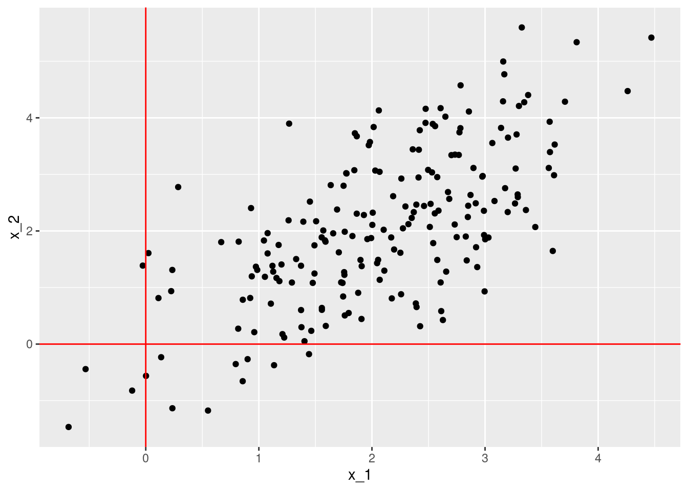
Hacemos descomposición en valores singulares y extraemos la primera dimensión:
svd_x <- svd(datos)
v <- svd_x$v[,1]
u <- svd_x$u[,1]
d <- svd_x$d[1]
#Nota: podemos mover signos para hacer las gráficas y la interpetación
# más simples
v <- - v
u <- - uGraficamos ahora el vector \(v\), escalándolo para ver mejor cómo quedan en relación a los datos (esto no es necesario hacerlo):
ggplot(datos) + geom_point(aes(x=x_1, y=x_2)) +
geom_vline(xintercept = 0, colour='red') +
geom_hline(yintercept = 0, colour='red') +
geom_segment(aes(xend= 4*v[1], yend=4*v[2], x=0, y=0), col='red', size=1.1,
arrow = arrow(length = unit(0.3,"cm"))) 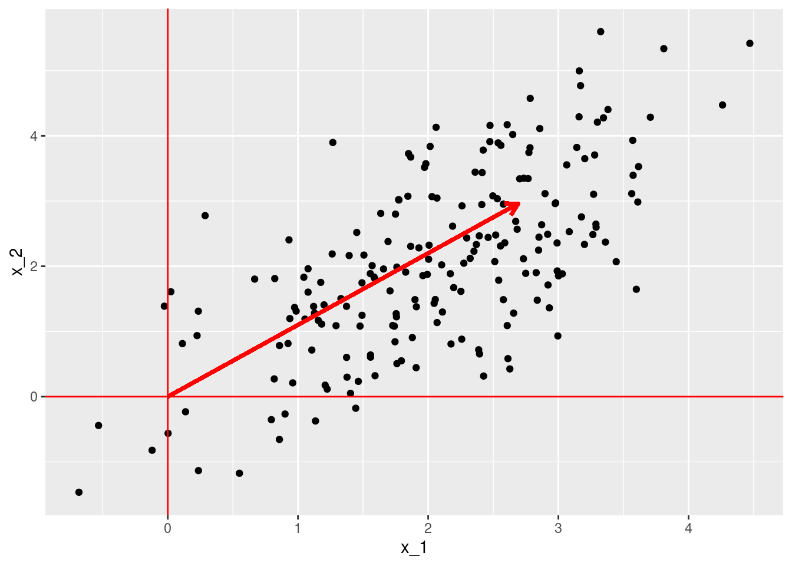
- El primer vector \(v\) es el “que pasa más cercano a los puntos,” en el sentido de que la distancia ortogonal entre los datos proyectados al vector \(v\) y los datos originales es lo más chica posible (mejor aproximación). La proyección de los datos sobre \(v\) es igual a \(Xv=\sigma_1 u\), es decir, está dada por \(\sigma u\), y la matriz de aproximaciones es \(\sigma uv^t\)
- Podemos utilizar \(u\) como nuevas coordenadas de los reglones en el nuevo espacio a lo largo de \(v\).
4.4.1 Discusión: aproximaciones de rango más alto
Vamos a repetir el análisis para dimensión 2, repitiendo el proceso que hicimos arriba. Denotamos como \(u_1\) y \(v_1\) los vectores \(u\) y \(v\) que encontramos en el paso anterior. Ahora buscamos minimizar
\[\min_{u_2,v_2} || X - \sigma_1 u_1 v_1^t - \sigma_2 u_2 v_2^{t} ||_F^2\] Repetimos el argumento de arriba y derivando respecto a las componentes de \(u_2,v_2\), y usando el hecho de que \((u_1, v_1)\) son vectores propios derecho e izquierdo asociados a \(\sigma_1\), obtenemos:
- \(v_2\) es ortogonal a \(v_1\).
- \(u_2\) es ortogonal a \(u_1\).
- \((u_2, v_2)\) tienen que ser vectores propios derecho e izquierdo asociados a \(\sigma_2\geq 0\).
Usando el hecho de que \(v_1\) y \(v_2\) son ortogonales, podemos podemos demostrar igual que arriba que
\[|| X - \sigma_1 u_1 v_1^t - \sigma_2 u_2 v_2^{t} ||_F^2 = \textrm{Tr} (XX^t) - (\sigma_1^2 + \sigma_2^2) = ||X||_F^2 - (\sigma_1^2 + \sigma_2^2)\] De modo que obtenemos la mejor aproximación escogiendo los dos valores de \(\sigma_1^2\) y \(\sigma_2^2\) más grandes para los que hay solución de (4.1) y (4.2) y
Observaciones:
- Aunque aquí usamos un argumento incremental o greedy (comenzando con la mejor aproximación de rango 1), es posible demostrar que la mejor aproximación de rango 2 se puede construir de este modo. Ver por ejemplo estas notas.
- Vemos que la solución es incremental: \(\sigma_1, u_1, v_1\) son los mismos que para la solución de dimensión 1. En dimensión 2, tenemos que buscar el siguiente valor singular más grande después de \(\sigma_1\), de forma que tenemos \(\sigma_1^2 \geq \sigma_2^2\). La solución entonces es agregar \(\sigma_2 u_2 v_2^t\), donde \((u_2,v_2)\) es el par de vectores propios izquierdo y derecho.
Ahora podemos enunciar nuestro teorema:
Aproximación de matrices mediante valores singulares
Sea \(X\) una matriz \(n\times p\), y supongamos que \(p\leq n\). Entonces, para cada \(k \leq p\), la mejor aproximación de rango \(k\) a la matriz \(X\) se puede escribir como una suma \(X_k\) de \(k\) matrices de rango 1: \[X_k = \sigma_1 u_1v_1^t + \sigma_2 u_2v_2^t + \ldots \sigma_k u_kv_k^t,\] donde
- La calidad de la aproximación está dada por \[||X-X_k||^2_F = ||X||^2_F - (\sigma_1^2+ \sigma_2^2 + \cdots + \sigma_k^2),\] de forma que cada aproximación es sucesivamente mejor.
- \(\sigma_1^2 \geq \sigma_2^2 \geq \cdots \geq \sigma_k^2\geq 0\)
- Los vectores \((u_i,v_i)\) son un par de vectores propios izquierdo y derechos para \(X\) con valor singular \(\sigma_i\).
- \(v_1,\ldots, v_k\) son vectores ortogonales de norma 1
- \(u_1,\ldots, u_k\) son vectores ortogonales de norma 1
Observaciones:
Normalmente no optimizamos como hicimos en el ejemplo de la matriz de gastos para encontrar las aproximación de rango bajo, sino que se usan algoritmos para encontrar vectores propios de \(X^tX\) (que son las \(v\)’s), o más generalmente algoritmos basados en álgebra lineal que intentan encontrar directamente los pares de vectores (u_i, v_i), y otros algoritmos numéricos (por ejemplo, basados en iteraciones).
Un resultado interesante (que faltaría por demostrar) es que si tomamos la aproximación de rango \(p\) (cuando \(p\leq n\)), obtenemos que \[X= \sigma_1 u_1v_1^t + \sigma_2 u_2v_2^t + \ldots \sigma_p u_pv_p^t\] es decir, la aproximación es exacta. Esto es un fraseo del teorema de descomposición en valores singulares, que normalmente se expresa de otra forma (ver más adelante).
Ejemplo
Consideremos el ejemplo de los gastos. Podemos usar la función svd de R
svd_gasto <- svd(X_arr)El objeto de salida contiene los valores singulares (en d). Nótese que ya habíamos calculado por fuerza bruta el primer valor singular:
sigma <- svd_gasto$d
sigma## [1] 123.4857584 4.5673718 0.3762533Los vectores \(v_1,v_2,v_3\) (pesos de las variables) en nuestras tres nuevas dimensiones, que son las columnas de
v <- svd_gasto$v
rownames(v) <- colnames(X_arr)
v## [,1] [,2] [,3]
## 1940 -0.2007388 -0.3220495 -0.92519623
## 1950 -0.5423269 -0.7499672 0.37872247
## 1960 -0.8158342 0.5777831 -0.02410854y los vectores \(u_1,u_2,u_3\), que son los scores de los rubros en cada dimensión
dim(svd_gasto$u)## [1] 5 3u <- (svd_gasto$u)
rownames(u) <- rownames(X_arr)
u## [,1] [,2] [,3]
## Food and Tobacco -0.87130286 -0.3713244 -0.1597823
## Household Operation -0.44966139 0.3422116 0.4108311
## Medical and Health -0.18778444 0.8259030 -0.2584369
## Personal Care -0.04812680 0.2074885 -0.4372590
## Private Education -0.03250802 0.1408623 0.7400691Podemos considerar ahora la segunda dimensión que encontramos.
En los scores: \(u_2\) tiene valores altos en el rubro 3 (salud), y valores negativos en rubro 1. Es un patrón de gasto más alto en todo menos en comida (que es el rubro 1), especialmente en salud.
Ahora vemos \(v_2\): tiene un valor alto en el año 60 (3a entrada), y valores más negativos para los dos primeros años (40 y 50)
Así que decimos que en los 60, el ingreso se desplazó hacia salud (y otros rubros en general), reduciéndose el de comida.
Si multiplicamos podemos ver la contribución de esta matriz de rango 1 (en billones (US) de dólares):
d <- svd_gasto$d
(d[2]*tcrossprod(svd_gasto$u[,2], svd_gasto$v[,2])) |> round(1)## [,1] [,2] [,3]
## [1,] 0.5 1.3 -1.0
## [2,] -0.5 -1.2 0.9
## [3,] -1.2 -2.8 2.2
## [4,] -0.3 -0.7 0.5
## [5,] -0.2 -0.5 0.4Este es un efecto relativamente chico (comparado con el patrón estable de la primera dimensión), pero ilumina todavía un aspecto adicional de esta tabla.
La norma de la diferencia entre la matriz \(X\) y la aproximación de rango 2 podemos calcularla de dos maneras:
sum(X_arr^2) - sum(d[1:2]^2)## [1] 0.1415665O calculando la aproximación y la diferencia directamente. Podemos hacerlo de la siguiente forma
X_arr_2 <- d[1]*tcrossprod(u[,1], v[,1]) + d[2]*tcrossprod(u[,2], v[,2])
sum((X_arr - X_arr_2)^2)## [1] 0.1415665Pero podemos calcular la aproximación \(X_2\) en forma matricial, haciendo
X_arr_2 <- u[,1:2] %*% diag(d[1:2]) %*% t(v[,1:2])
sum((X_arr - X_arr_2)^2)## [1] 0.14156654.5 Descomposición en valores singulares (SVD o DVS)
Aunque ya hemos enunciado los resultados, podemos enunciar el teorema de descomposición en valores singulares en términos matriciales.
Supongamos entonces que tenemos una aproximación de rango \(k\)
\[X_k = \sigma_1 u_1v_1^t + \sigma_2 u_2v_2^t + \ldots \sigma_k u_kv_k^t\]
Se puede ver que esta aproximación se escribe como (considera todos los vectores como vectores columna)
\[ X_k = (u_1,u_2, \ldots, u_k) \left( {\begin{array}{ccccc} \sigma_1 & 0 & \cdots & \cdots & 0 \\ 0 & \sigma_2 & 0 &\cdots & 0 \\ \vdots & & & \vdots\\ 0 & 0 & 0 & \cdots & \sigma_k \\ \end{array} } \right) \left ( \begin{array}{c} v_1^t \\ v_2^t \\ \vdots \\ v_k^t \end{array} \right)\]
o más simplemente, como
\[X_k = U_k \Sigma_k V_k^t\] donde \(U_k\) (\(n\times k\)) contiene los vectores \(u_i\) en sus columnas, \(V_k\) (\(k\times p\)) contiene los vectores \(v_j\) en sus columnas, y la matriz \(\Sigma_k\) es la matriz diagonal con los primeros \(\sigma_1\geq \sigma_2\geq\cdots \sigma_k\) valores singulares.
Ver el ejemplo anterior para ver cómo los cálculos son iguales.
Descomposición en valores singulares
Sea \(X\) una matriz de \(n\times p\) con \(p\leq n\). Entonces existe una factorización \[X=U\Sigma V^t,\]
\(\Sigma\) es una matriz diagonal con valores no-negativos (valores singulares). Los valores singulares de \(\Sigma\) estan ordenados en orden decreciente.
Las columnas de U y V son vectores ortogonales unitarios. La i-ésima columna \(u_i\) de \(V\) y la i-ésima columna \(v_i\) de \(V\) son pares de vectores propios \((u_i, v_i)\) izquierdo y derecho de \(X\) con valor singular \(\sigma_i = \Sigma_{i,i}\)
- Una vez que tenemos esta descomposición, podemos extraer la aproximación que nos sea útil: una aproximación \(X_k\) de orden \(k\) se escribe como \[X_k = U_k\Sigma_k V_k^t\] donde \(U_k\) contiene las primeras \(k\) columnas de \(U\), \(V_k\) las primeras \(k\) columnas de \(V\), y \(\Sigma_k\) es la submatriz cuadrada \(k\times k\) de los primeros \(k\) renglones y columnas de \(\Sigma\) :
knitr::include_graphics("images/svd.png")
- Frecuenta el teorema de aproximación óptima (teorema de Ekhart-Young) se deriva de la descomposición en valores singulares, que se demuestra antes usando técnicas de álgebra lineal.
4.6 Más de interpretación geométrica
Proyecciones
Los vectores \(v_1,v_2, \ldots, v_p\) están en el espacio de variables o columnas (son de dimensión \(p\)). La componente de la proyección (ver proyección de vectores ) de la matriz de datos sobre una de estas dimensiones está dada por \[Xv_j,\] que son iguales a los scores de los casos escalados por \(\sigma\): \[\sigma_j u_j\].
Las proyecciones \(d_j = \sigma_j u_j\) son las variables que normalmente se usan para hacer análisis posterior, aunque cuando la escala de las proyecciones no es importante, también se pueden usar simplemente las \(u_j\).Por ejemplo, la projeccion del rengón \(x_i\) de la matriz \(X\) es \((x_i\cdot v_j) v_j\) (nótese que \(x_i \cdot v_j\) es un escalar, la componente de la proyección).
Consideremos nuestro ejemplo anterior:
set.seed(3221)
x_1 <- rnorm(200,2, 1)
x_2 <- rnorm(200,0,1) + x_1
datos <- data_frame(x_1, x_2)
ggplot(datos, aes(x=x_1, y=x_2)) + geom_point() +
geom_vline(xintercept = 0, colour='red') +
geom_hline(yintercept = 0, colour='red')
Hacemos descomposición en valores singulares y graficamos
svd_x <- svd(datos)
v <- svd_x$v |> t() |> as_tibble(.name_repair = NULL) ## Warning: The `x` argument of `as_tibble.matrix()` must have unique column names if `.name_repair` is omitted as of tibble 2.0.0.
## Using compatibility `.name_repair`.
## This warning is displayed once every 8 hours.
## Call `lifecycle::last_lifecycle_warnings()` to see where this warning was generated.u <- svd_x$u |> as_tibble(.name_repair = NULL)
colnames(v) <- c('x_1','x_2')
colnames(u) <- c('x_1','x_2')
d <- svd_x$d
#Nota: podemos mover signos para hacer las gráficas y la interpetación
# más simples
v[,1] <- - v[,1]
u[,1] <- - u[,1]
v## # A tibble: 2 × 2
## x_1 x_2
## <dbl> <dbl>
## 1 0.673 -0.740
## 2 0.740 0.673Graficamos ahora los dos vectores \(v_1\) y \(v_2\), escalándolos para ver mejor cómo quedan en relación a los datos (esto no es necesario hacerlo):
ggplot(datos) + geom_point(aes(x=x_1, y=x_2)) +
geom_vline(xintercept = 0, colour='red') +
geom_hline(yintercept = 0, colour='red') +
geom_segment(data = v, aes(xend= 4*x_1, yend=4*x_2, x=0, y=0), col='red', size=1.1,
arrow = arrow(length = unit(0.3,"cm"))) +
coord_equal()
El primer vector es el “que pasa más cercano a los puntos,” en el sentido de que la distancia entre los datos proyectados al vector y los datos es lo más chica posible (mejor aproximación). La proyección de los datos sobre \(v\) es igual a \(Xv_1=\sigma_1 u_1\), es decir, está dada por \(\sigma u_1\)
Las proyecciones de los datos sobre el segundo vector \(v_2\) están dadas igualmente por \(\sigma_2 u_2\). Sumamos esta proyección a la de la primera dimensión para obtener una mejor aproximación a los datos (en este caso, exacta).
Por ejemplo, seleccionemos el primer punto y obtengamos sus proyecciones:
proy_1 <- (d[1])*as.numeric(u[1,1])*v$x_1 #v_1 por el score en la dimensión 1 u[1,1]
proy_2 <- (d[2])*as.numeric(u[1,2])*v$x_2 #v_2 por el score en la dimensión 1 u[1,1]
proy_2 + proy_1## [1] 3.030313 1.883698datos[1,]## # A tibble: 1 × 2
## x_1 x_2
## <dbl> <dbl>
## 1 3.03 1.88Podemos graficar la aproximación sucesiva:
datos$selec <- c('seleccionado', rep('no_seleccionado', nrow(datos)-1))
ggplot(datos) + geom_point(aes(x=x_1, y=x_2, colour=selec, size=selec)) +
geom_vline(xintercept = 0, colour='red') +
geom_hline(yintercept = 0, colour='red') +
geom_segment(aes(xend= proy_1[1], yend=proy_1[2], x=0, y=0), col='red', size=1.1,
arrow = arrow(length = unit(0.3,"cm"))) +
geom_segment(aes(xend= proy_2[1] + proy_1[1], yend=proy_2[2] + proy_1[2],
x=proy_1[1], y=proy_1[2]),
col='red', size=1.1,
arrow = arrow(length = unit(0.2,"cm"))) +
coord_equal()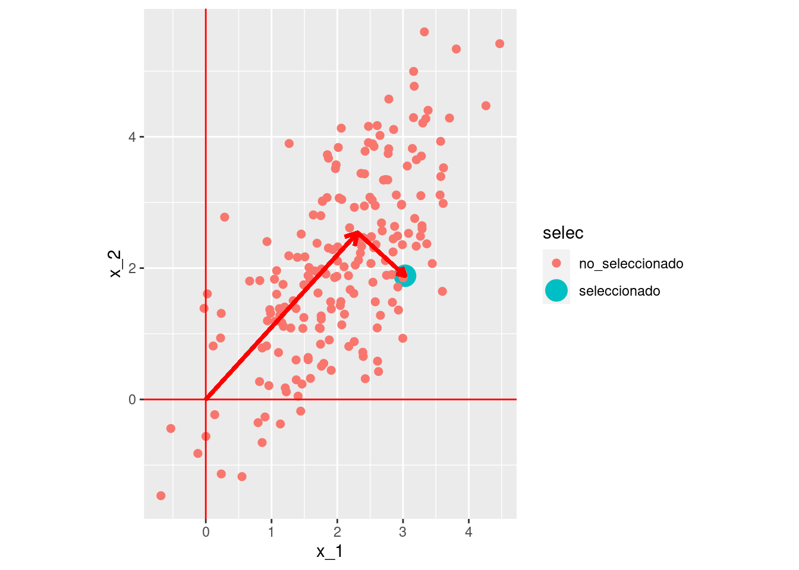
- Las aproximaciones de la descomposión en valores singulares mediante matrices de rango 1 puede entenderse como la búsqueda sucesiva de subespacios de dimensión baja, donde al proyectar los datos perdemos poca información.
- Las proyecciones sucesivas se hacen sobre vectores ortogonales, y en este sentido la DVS separa la información en partes que no tienen contenido común (desde el punto de vista lineal).
Finalmente, muchas veces graficamos las proyecciones en el nuevo espacio creado por las dimensiones de la DVS (nótese la escala distinta de los ejes).
proyecciones <- data_frame(dim_1 = d[1]*u$x_1, dim_2 = d[2]*u$x_2,
selec = datos$selec)
ggplot(proyecciones, aes(x = dim_1, y = dim_2, size=selec, colour=selec)) +
geom_point() ## Warning: Using size for a discrete variable is not advised.
4.7 SVD para películas de netflix
Vamos a intentar encontrar dimensiones latentes para los datos del concurso de predicción de Netflix (una de las componentes de las soluciones ganadoras fue descomposición en valores singulares).
ruta <- "../datos/netflix/dat_muestra_nflix.csv"
url <- "https://s3.amazonaws.com/ma-netflix/dat_muestra_nflix.csv"
if(!file.exists(ruta)){
evals_tbl <- read_csv(url, col_types = "iii")
write_csv(evals_tbl, ruta)
} else {
evals_tbl <- read_csv(ruta, col_types = "iii")
}
evals_tbl## # A tibble: 20,968,941 × 5
## peli_id usuario_id_orig calif fecha usuario_id
## <int> <int> <int> <date> <dbl>
## 1 1 2442 3 2004-04-14 1
## 2 1 1086807 3 2004-12-28 2
## 3 1 2165002 4 2004-04-06 3
## 4 1 1133214 4 2004-03-07 4
## 5 1 1537427 4 2004-03-29 5
## 6 1 525356 2 2004-07-11 6
## 7 1 1910569 4 2004-04-12 7
## 8 1 2421815 2 2004-02-26 8
## 9 1 2508819 3 2004-05-18 9
## 10 1 1342007 3 2004-07-16 10
## # … with 20,968,931 more rowspeliculas_nombres <- read_csv("../datos/netflix/movies_title_fix.csv",
col_names = c("peli_id", "year", "name") )## Rows: 17770 Columns: 3## ── Column specification ────────────────────────────────────────────────────────
## Delimiter: ","
## chr (2): year, name
## dbl (1): peli_id##
## ℹ Use `spec()` to retrieve the full column specification for this data.
## ℹ Specify the column types or set `show_col_types = FALSE` to quiet this message.peliculas_nombres## # A tibble: 17,770 × 3
## peli_id year name
## <dbl> <chr> <chr>
## 1 1 2003 Dinosaur Planet
## 2 2 2004 Isle of Man TT 2004 Review
## 3 3 1997 Character
## 4 4 1994 Paula Abdul's Get Up & Dance
## 5 5 2004 The Rise and Fall of ECW
## 6 6 1997 Sick
## 7 7 1992 8 Man
## 8 8 2004 What the #$*! Do We Know!?
## 9 9 1991 Class of Nuke 'Em High 2
## 10 10 2001 Fighter
## # … with 17,760 more rowsHay muchas peliculas que no son evaluadas por ningún usuario. Aquí tenemos que decidir cómo tratar estos datos: si los rellenamos con 0, la implicación es que un usuario tiene bajo interés en una película que no ha visto. Hay otras opciones (y quizá un método que trate apropiadamente los datos faltantes es mejor).
library(Matrix)
library(irlba)
if(TRUE){
evals_tbl <- evals_tbl |> group_by(usuario_id) |> mutate(calif_centrada = calif - mean(calif)) |>
ungroup()
#Usamos matriz rala, de otra manera la matriz es demasiado grande
evals_mat <- sparseMatrix(i = as.integer(evals_tbl$usuario_id),
j = as.integer(evals_tbl$peli_id),
x = evals_tbl$calif_centrada)
set.seed(81)
svd_parcial <- irlba(evals_mat, 6)
}svd_parcial$d## [1] 917.5007 598.4652 392.0046 342.3649 333.8895 327.0080#no correr en notas
V_peliculas <- svd_parcial$v |> as_tibble(.name_repair = NULL) |>
mutate(peli_id = row_number()) |>
left_join(peliculas_nombres |> mutate(pelicula_id = peli_id))## Joining, by = "peli_id"U_usuarios <- svd_parcial$u |> as_tibble(.name_repair = NULL)Examinamos la primera y segunda componente en los pesos de las películas \(V\):
library(ggrepel)
pel_graf <- V_peliculas |> mutate(dist_0 = sqrt(V1^2 + V2^2))
muestra <- pel_graf |>
mutate(etiqueta = name) |>
mutate(etiqueta = ifelse(dist_0 > 0.05, name, ''))
ggplot(muestra, aes(x = V1, y = V2, label=etiqueta)) +
geom_point(alpha = 0.15) +
geom_text_repel(size = 2.0, max.overlaps = 12) 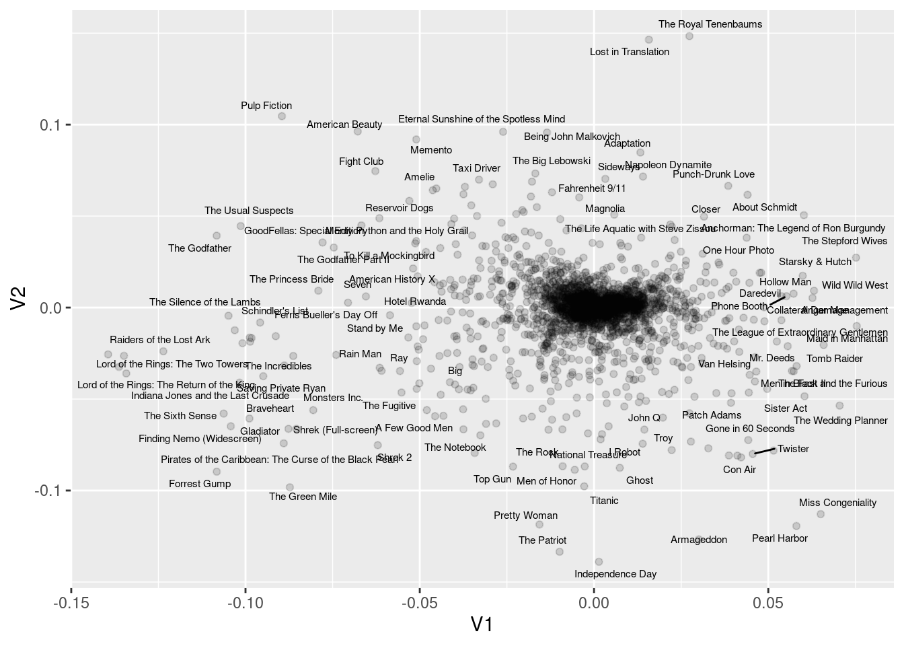 ¿Qué nombres pondrías a estas dimensiones? Puedes examinar otras.
4.7.1 Calidad de representación de SVD.
Podemos hacer varios cálculos para entender qué tan buena es nuestra aproximación de rango bajo \(X_k\). Por ejemplo, podríamos calcular las diferencias de \(X-X_k\) y presentarlas de distinta forma.
Ejemplo
En el ejemplo de rubros de gasto, podríamos mostrar las diferencias en billones (us) de dólares, donde vemos que la aproximación es bastante buena
qplot(as.numeric(X_arr-X_arr_2))## `stat_bin()` using `bins = 30`. Pick better value with `binwidth`.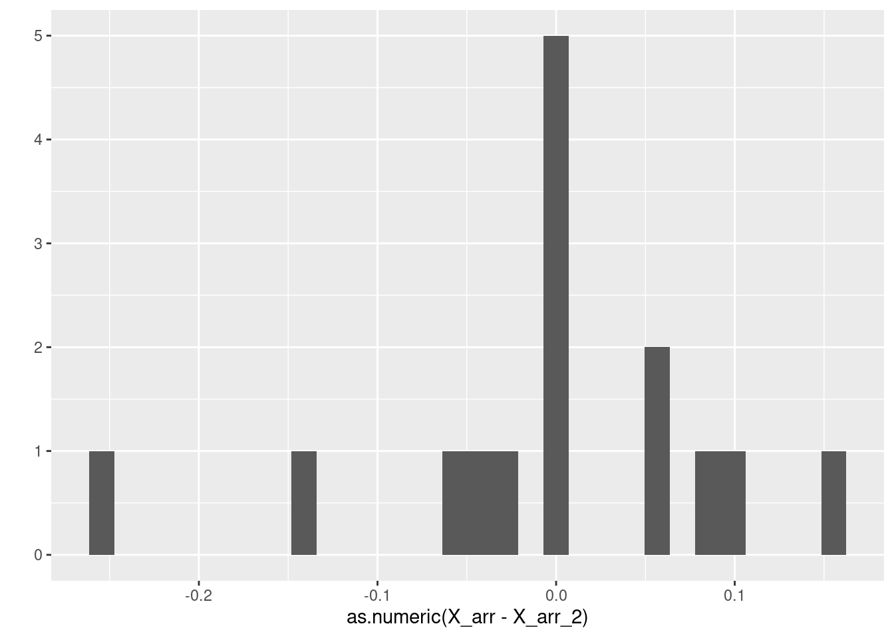
Que podríamos resumir, por ejemplo, con la media de errores absolutos:
mean(abs(as.numeric(X_arr-X_arr_2)))## [1] 0.06683576Otra opción es usar la norma Frobenius, calculando para la apoximación de rango 1
1 - (sum(X_arr^2) - sum(svd_gasto$d[1]^2))/sum(X_arr^2)## [1] 0.9986246Lo que indica que capturamos 99.8% de la información, y para la de rango 2: d
1-(sum(X_arr^2) - sum(svd_gasto$d[1:2]^2))/sum(X_arr^2)## [1] 0.9999907Lo que indica que estos datos (en 3 variables), podemos entenderlos mediante un análisis de dos dimensiones
Observaciones: Dependiendo de nuestro objetivo, nos interesa alcanzar distintos niveles de calidad de representación. Por ejemplo, algunas reglas de dedo:
Si queremos usar los datos para un proceso posterior, o dar una descripción casi completa de los datos, quizá buscamos calidad \(>0.9\) o mayor.
Si nos interesa extraer los patrones más importantes, podemos considerar valores de calidad mucho más chicos, entendiendo que hay una buena parte de la información que no se explica por nuestra aproximación.
4.8 Componentes principales
Componentes principales es la descomposición en valores singulares aplicada a una matriz de datos centrada por columna. Esta operación convierte el problema de aproximación de matrices de rango bajo en uno de aproximaciones que buscan explicar la mayoría de la varianza (incluyendo covarianza) de las variables de la matriz de datos \(X\). Consideremos entonces una matriz de datos \(X\) de tamaño \(n\times p\). Definimos la matrix centrada por columna \(\tilde{X}\) , que se calcula como \[\tilde{X}_{i,j} = X_{i,j} - \mu_j\] donde \(\mu_j = \frac{1}{n} \sum_j X_{i,j}\). - La diferencia en construcción entre Svd y Svd con columnas centradas (componentes principales) es que en Svd las proyecciones se hacen pasando por el origen, pero en componentes principales se hacen a partir del centroide de los datos. ### Ejemplo {-} Veamos primero el último ejemplo simulado que hicimos anterioremnte. Primero centramos los datos por columna:
datos_c <- scale(datos |> select(-selec), scale = FALSE) |> as_tibble()
ggplot(datos_c, aes(x=x_1, y=x_2)) + geom_point() +
geom_vline(xintercept = 0, colour='red') +
geom_hline(yintercept = 0, colour='red')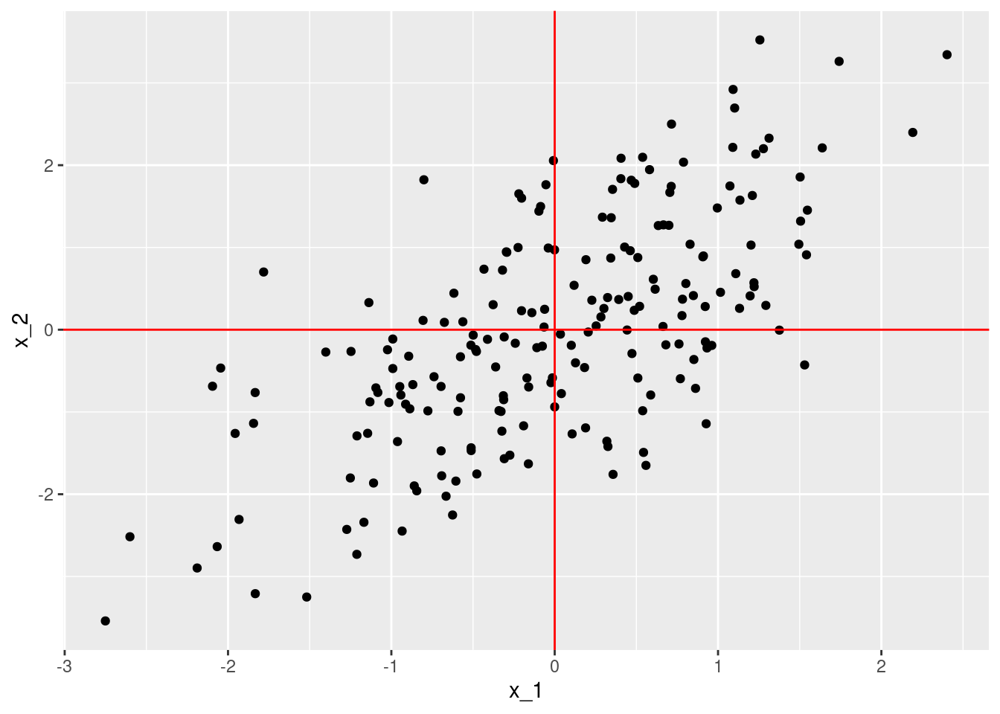 Y ahora calculamos la descomposición en valores singulares
svd_x <- svd(datos_c)
v <- t(svd_x$v) |> as_tibble()
u <- svd_x$u |> as_tibble()
colnames(v) <- c('x_1','x_2')
colnames(u) <- c('x_1','x_2')
d <- svd_x$d
v## # A tibble: 2 × 2
## x_1 x_2
## <dbl> <dbl>
## 1 0.507 0.862
## 2 0.862 -0.507Notemos que los resultados son similares, pero no son los mismos. Graficamos ahora los dos vectores \(v_1\) y \(v_2\), que en este contexto se llaman direcciones principales
ggplot(datos_c) + geom_point(aes(x=x_1, y=x_2)) +
geom_vline(xintercept = 0, colour='red') +
geom_hline(yintercept = 0, colour='red') +
geom_segment(data = v, aes(xend= 5*x_1, yend=5*x_2, x=0, y=0), col='red', size=1.1,
arrow = arrow(length = unit(0.3,"cm"))) +
coord_equal()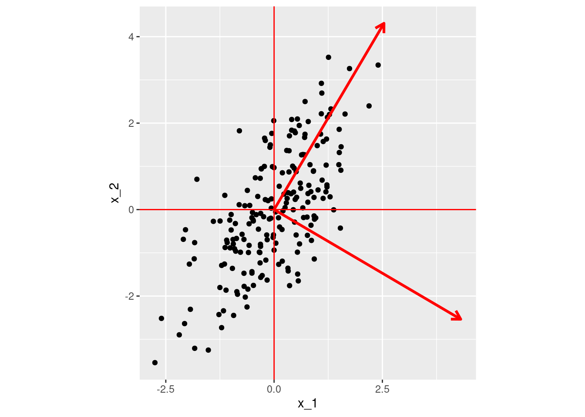 Las componentes de las proyecciones de los datos sobre las direcciones principales dan las componentes principales (nótese que multiplicamos por los valores singulares):
head(svd_x$u %*% diag(svd_x$d))## [,1] [,2]
## [1,] 0.3230641 0.9257829
## [2,] 0.4070429 1.5360770
## [3,] -1.2788977 -0.2762829
## [4,] 0.8910247 0.4071926
## [5,] -4.4466993 -0.5743111
## [6,] -1.2267878 0.3470759Que podemos graficar
comps <- svd_x$u %*% diag(svd_x$d) |> as_tibble()
ggplot(comps, aes(x=V1, y=V2)) + geom_point()+
geom_vline(xintercept = 0, colour='red') +
geom_hline(yintercept = 0, colour='red')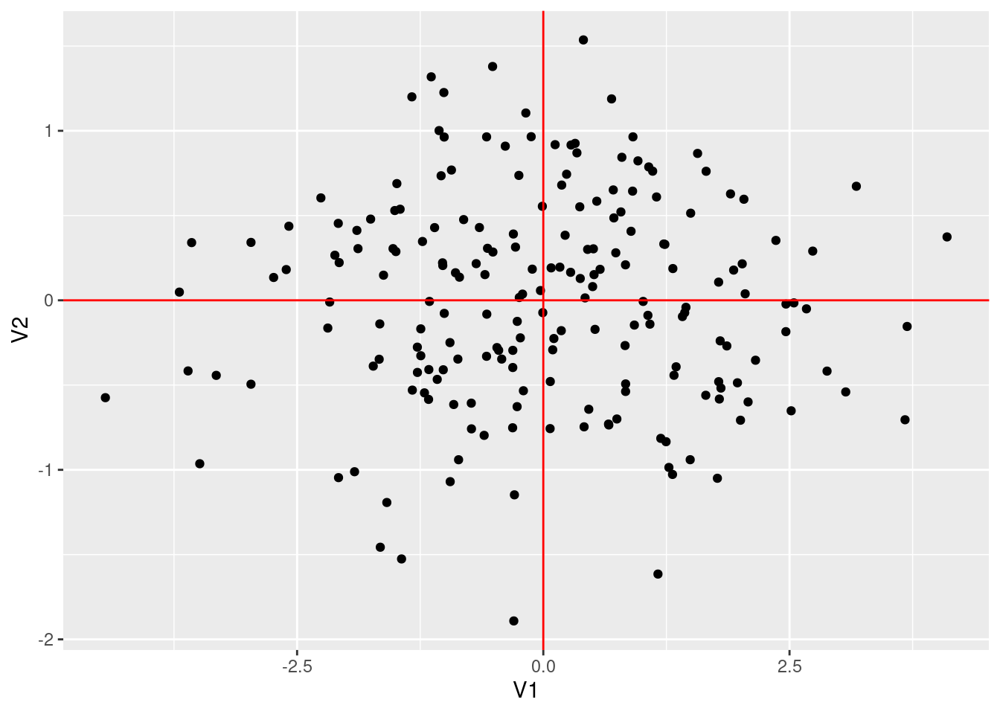 Este resultado lo podemos obtener directamente usando la función princomp
comp_principales <- princomp(datos |> select(-selec))
scores <- comp_principales$scores
head(scores)## Comp.1 Comp.2
## [1,] 0.3230641 0.9257829
## [2,] 0.4070429 1.5360770
## [3,] -1.2788977 -0.2762829
## [4,] 0.8910247 0.4071926
## [5,] -4.4466993 -0.5743111
## [6,] -1.2267878 0.3470759Y verificamos que los resultados son los mismos:
qplot(scores[,1], comps$V1)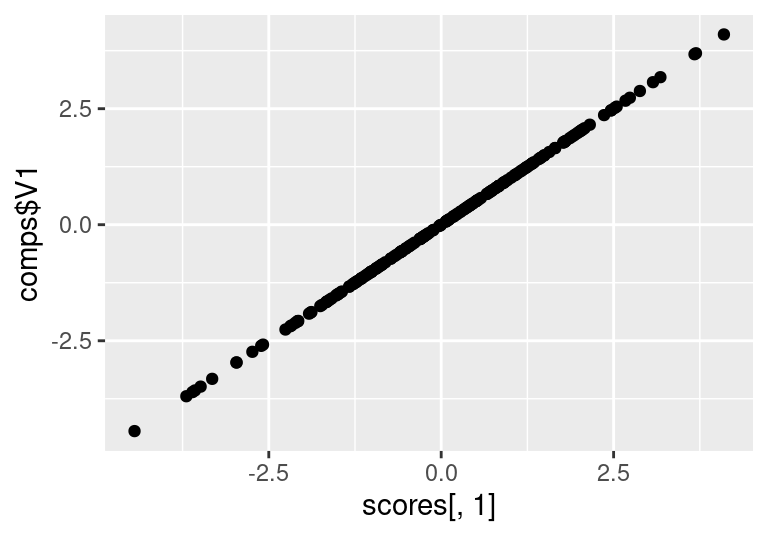
qplot(scores[,2], -comps$V2)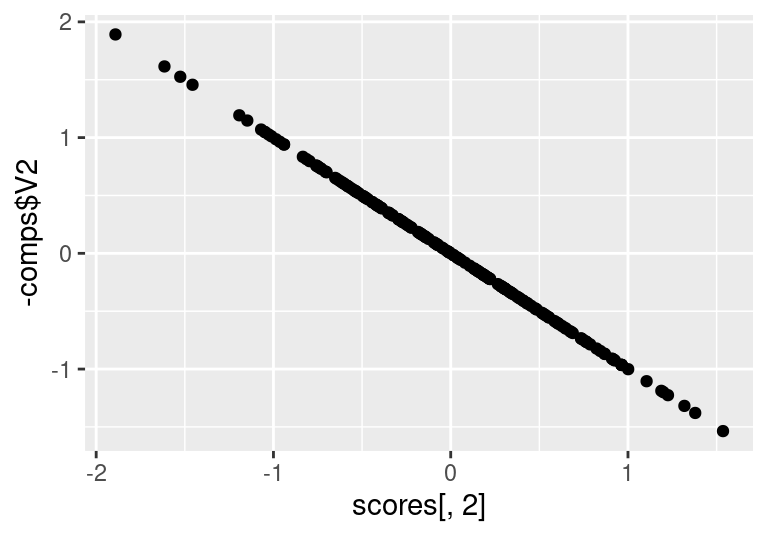
Varianza en componentes principales
Cuando centramos por columna, la svd es un tipo de análisis de la matriz de varianzas y covarianzas de la matriz \(X\), dada por \[C = \frac{1}{n} \tilde{X}^t \tilde{X}\] (Nota: asegúrate de que entiendes por qué esta es la matriz de varianzas y covarianzas de \(X\)).
Así que
Adicionalmente, vimos que podíamos escribir \[||\tilde{X}||^2_F = \sum_{j=1}^p \sigma_{j}^2\] Y el lado izquierdo es en este caso una suma de varianzas: \[\sum_{j=1}^p Var(X_j) = \sum_{j=1}^p \sigma_{j}^2.\] El lado izquierdo se llama Varianza total de la matriz \(X\). Componentes principales particiona la varianza total de la matriz \(X\) en componentes.
¿Centrar o no centrar por columna?
Típicamente, antes de aplicar SVD hacemos algunos pasos de procesamiento de las variables. En componentes principales, este paso de procesamiento es centrar la tabla por columnas. Conviene hacer esto cuando:
- Centramos si las medias de las columnas no tienen información importante o interesante para nuestros propósitos - es mejor eliminar esta parte de variación desde el principio para no lidiar con esta información en las dimensiones que obtengamos. En otro caso, quizá es mejor no centrar.
- Centramos si nos interesa más tener una interpretación en términos de varianzas y covarianzas que hacer una aproximación de los datos originales. Sin embargo, también es importante notar que muchas veces los resultados de ambos análisis son similares en cuanto a interpretación y en cuanto a usos posteriores de las dimensiones obtenidas. Pueden ver análisis detallado en este artículo, que hace comparaciones a lo largo de varios conjuntos de datos.
Ejemplo: resultados similares
En el ejemplo de gasto en rubros que vimos arriba, los pesos \(v_j\) son muy similares:
comps_1 <- princomp(USPersonalExpenditure[,c(1,3,5)])
svd_1 <- svd(USPersonalExpenditure[,c(1,3,5)])
comps_1$loadings[,]## Comp.1 Comp.2 Comp.3
## 1940 0.2099702 0.2938755 0.93249650
## 1950 0.5623341 0.7439168 -0.36106546
## 1960 0.7998081 -0.6001875 0.00905589svd_1$v## [,1] [,2] [,3]
## [1,] -0.2007388 -0.3220495 -0.92519623
## [2,] -0.5423269 -0.7499672 0.37872247
## [3,] -0.8158342 0.5777831 -0.02410854comps_1$scores## Comp.1 Comp.2 Comp.3
## Food and Tobacco 68.38962 0.8783065 0.06424607
## Household Operation 16.25334 -0.9562769 -0.16502902
## Medical and Health -16.13276 -2.2900370 0.07312028
## Personal Care -33.29512 1.0003211 0.23036177
## Private Education -35.21507 1.3676863 -0.20269910svd_1$u %*% diag(svd_1$d)## [,1] [,2] [,3]
## [1,] -107.593494 -1.6959766 -0.06011861
## [2,] -55.526778 1.5630078 0.15457655
## [3,] -23.188704 3.7722060 -0.09723774
## [4,] -5.942974 0.9476773 -0.16452015
## [5,] -4.014277 0.6433704 0.27845344Llegaríamos a conclusiones similares si interpretamos cualquiera de los dos análisis (verifica por ejemplo el ordenamiento de rubros y años en cada dimensión).
Ejemplos: donde es buena idea centrar
Por ejemplo, si hacemos componentes principales con los siguientes datos:
whisky <- read_csv('../datos/whiskies.csv')
head(whisky)## # A tibble: 6 × 17
## RowID Distillery Body Sweetness Smoky Medicinal Tobacco Honey Spicy Winey
## <chr> <chr> <dbl> <dbl> <dbl> <dbl> <dbl> <dbl> <dbl> <dbl>
## 1 01 Aberfeldy 2 2 2 0 0 2 1 2
## 2 02 Aberlour 3 3 1 0 0 4 3 2
## 3 03 AnCnoc 1 3 2 0 0 2 0 0
## 4 04 Ardbeg 4 1 4 4 0 0 2 0
## 5 05 Ardmore 2 2 2 0 0 1 1 1
## 6 06 ArranIsleOf 2 3 1 1 0 1 1 1
## # … with 7 more variables: Nutty <dbl>, Malty <dbl>, Fruity <dbl>,
## # Floral <dbl>, Postcode <chr>, Latitude <dbl>, Longitude <dbl>whisky_sabor <- whisky |> select(Body:Floral)
comp_w <- princomp(whisky_sabor)Veamos los pesos de las primeras cuatro dimensiones
round(comp_w$loadings[, 1:4], 2)## Comp.1 Comp.2 Comp.3 Comp.4
## Body 0.36 0.49 0.03 0.07
## Sweetness -0.20 0.05 -0.26 0.37
## Smoky 0.48 0.07 0.22 -0.09
## Medicinal 0.58 -0.16 0.04 -0.08
## Tobacco 0.09 -0.02 0.00 0.03
## Honey -0.22 0.42 0.11 -0.03
## Spicy 0.06 0.18 0.70 0.17
## Winey -0.04 0.64 -0.23 0.23
## Nutty -0.05 0.26 -0.18 -0.85
## Malty -0.13 0.10 0.11 -0.07
## Fruity -0.20 0.12 0.40 -0.09
## Floral -0.38 -0.13 0.34 -0.15La primera componente separa whisky afrutado/floral/dulce de los whishies ahumados con sabor medicinal. La segunda componente separa whiskies con más cuerpo, características de vino y miel de otros más ligeros. Las siguientes componentes parece oponer Spicy contra Fruity y Floral, y la tercera principalmente contiene la medición de Nutty. Según vimos arriba, podemos ver que porcentaje de la varianza explica cada componente
summary(comp_w)## Importance of components:
## Comp.1 Comp.2 Comp.3 Comp.4 Comp.5
## Standard deviation 1.5268531 1.2197972 0.86033607 0.79922719 0.74822104
## Proportion of Variance 0.3011098 0.1921789 0.09560193 0.08250322 0.07230864
## Cumulative Proportion 0.3011098 0.4932887 0.58889059 0.67139381 0.74370245
## Comp.6 Comp.7 Comp.8 Comp.9 Comp.10
## Standard deviation 0.6811330 0.62887454 0.59593956 0.52041611 0.49757158
## Proportion of Variance 0.0599231 0.05108089 0.04587064 0.03498097 0.03197728
## Cumulative Proportion 0.8036256 0.85470644 0.90057708 0.93555805 0.96753533
## Comp.11 Comp.12
## Standard deviation 0.42174644 0.271073661
## Proportion of Variance 0.02297382 0.009490848
## Cumulative Proportion 0.99050915 1.000000000Y vemos que las primeras dos componentes explican casi el 50% de la varianza. Las siguientes componentes aportan relativamente pooca varianza comparada con la primera Podemos graficar los whiskies en estas dos dimensiones:
library(ggrepel)
scores_w <- comp_w$scores |> as_tibble()
scores_w$Distillery <- whisky$Distillery
ggplot(scores_w, aes(x=Comp.1, y= -Comp.2, label=Distillery)) +
geom_vline(xintercept=0, colour = 'red') +
geom_hline(yintercept=0, colour = 'red') +
geom_point()+
geom_text_repel(size=2.5, segment.alpha = 0.3, force = 0.1, seed=202) +
xlab('Fruity/Floral vs. Smoky/Medicional') +
ylab('Winey/Body and Honey')## Warning: ggrepel: 12 unlabeled data points (too many overlaps). Consider
## increasing max.overlaps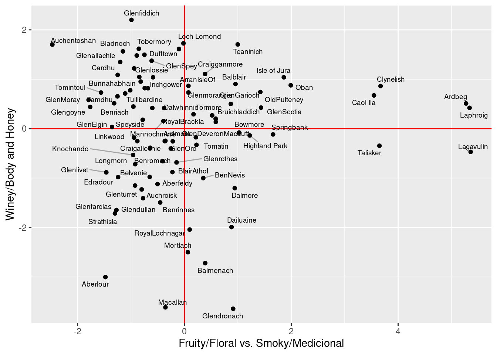 ¿Que pasa si usamos svd sin centrar? Vemos que la primera componente simplemente captura los distintos niveles promedio de las variables. Esta componente no es muy interesante, pues por las características del whisky es normal que Medicinal o Tabaco tengo una media baja, comparado con dulzor, Smoky, etc. Adicionalmente, el vector \(u\) asociado a esta dimensión tiene poca variación:
svd_w <- svd(whisky_sabor)
svd_w$v[,1:2]## [,1] [,2]
## [1,] -0.39539241 -0.38286900
## [2,] -0.42475240 0.19108176
## [3,] -0.28564145 -0.48775482
## [4,] -0.09556061 -0.57453247
## [5,] -0.02078706 -0.09187451
## [6,] -0.24191199 0.20518808
## [7,] -0.26485793 -0.07103866
## [8,] -0.19488910 0.01930294
## [9,] -0.27858538 0.03430020
## [10,] -0.33669488 0.11644937
## [11,] -0.34001725 0.18933847
## [12,] -0.31441595 0.37730436plot(svd_w$v[,1], apply(whisky_sabor, 2, mean))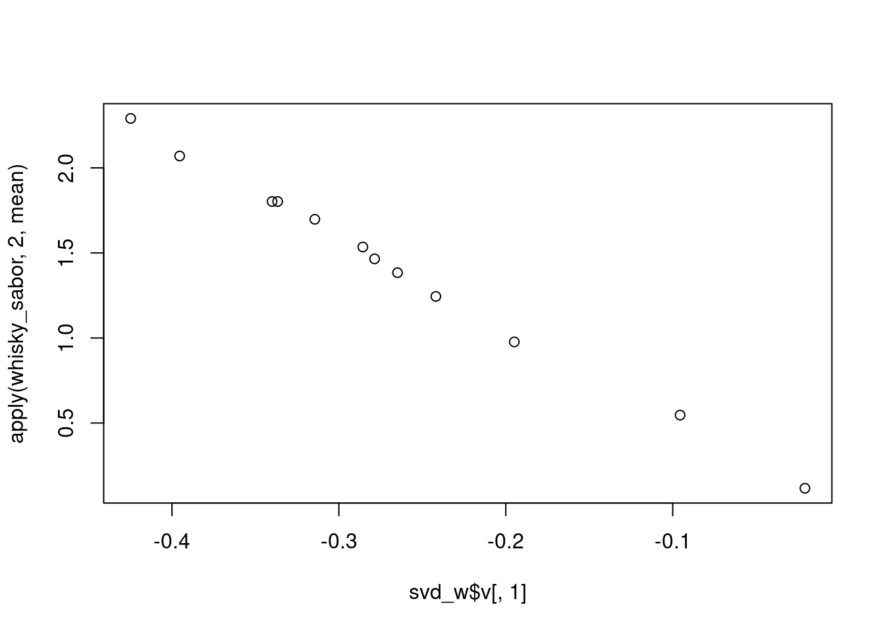
mean(svd_w$u[,1])## [1] -0.1063501sd(svd_w$u[,1])## [1] 0.01792508Observación La primera componente de svd está haciendo el trabajo de ajustar la media. Como no nos interesa este hecho, podemos mejor centrar desde el principio y trabajar con las componentes principales. ¿Cómo se ven las siguientes dos dimensiones del análisis no centrado?
Ejemplo: donde no centrar funciona bien
Considera el ejemplo de la tarea con la tabla de gastos en distintas categorías de alimentos según el decil de ingreso del hogar. ¿Por qué en este ejemplo centrar por columna no es tan buena idea? Si hacemos el centrado, quitamos información importante de la tabla, que es que los distintos deciles tienen distintos niveles de gasto. Veamos como lucen los dos análisis. Para componentes principales:
deciles <- read_csv('../datos/enigh_deciles.csv')
deciles |> arrange(desc(d1))## # A tibble: 13 × 11
## nombre d1 d2 d3 d4 d5 d6 d7 dd8 d9 d10
## <chr> <dbl> <dbl> <dbl> <dbl> <dbl> <dbl> <dbl> <dbl> <dbl> <dbl>
## 1 CEREAL… 1.33e6 1.87e6 2.25e6 2.33e6 2.58e6 2.59e6 2.84e6 2.77e6 2.74e6 2.71e6
## 2 CARNES 1.07e6 1.75e6 2.13e6 2.51e6 2.97e6 3.23e6 3.71e6 3.94e6 4.18e6 4.72e6
## 3 VERDUR… 9.74e5 1.28e6 1.48e6 1.59e6 1.67e6 1.73e6 1.78e6 1.81e6 1.83e6 1.98e6
## 4 LECHE … 5.86e5 8.95e5 1.24e6 1.40e6 1.58e6 1.78e6 1.97e6 2.12e6 2.36e6 3.09e6
## 5 OTROS … 2.90e5 4.49e5 6.90e5 7.82e5 1.03e6 1.12e6 1.45e6 1.54e6 2.28e6 2.71e6
## 6 HUEVO 2.55e5 3.60e5 4.22e5 4.43e5 4.06e5 4.05e5 4.51e5 4.19e5 3.99e5 3.65e5
## 7 FRUTAS 1.92e5 2.84e5 3.38e5 4.68e5 5.18e5 5.71e5 7.05e5 7.65e5 8.82e5 1.38e6
## 8 AZUCAR… 1.67e5 2.13e5 2.00e5 1.91e5 2.02e5 1.90e5 1.57e5 1.74e5 1.64e5 1.63e5
## 9 ACEITE… 1.36e5 1.90e5 1.80e5 1.84e5 1.94e5 1.97e5 1.89e5 1.81e5 1.82e5 2.09e5
## 10 PESCAD… 1.10e5 1.88e5 2.14e5 2.36e5 2.87e5 2.97e5 3.34e5 4.37e5 4.97e5 8.65e5
## 11 TUBERC… 1.07e5 1.58e5 1.91e5 2.02e5 2.29e5 2.15e5 2.14e5 2.24e5 2.22e5 2.28e5
## 12 CAFE, … 7.19e4 1.20e5 1.09e5 9.71e4 1.25e5 1.29e5 1.10e5 1.26e5 1.43e5 2.25e5
## 13 ESPECI… 5.76e4 8.06e4 9.18e4 1.09e5 1.16e5 1.34e5 1.55e5 1.52e5 1.68e5 1.82e5deciles <- deciles |> column_to_rownames(var = "nombre")
comp_enigh <- princomp(deciles)Veamos las primeras dos componente, cuyas direcciones principales son:
comp_enigh$loadings[,1:2]## Comp.1 Comp.2
## d1 0.1224572 0.29709420
## d2 0.1858230 0.35463967
## d3 0.2324626 0.34856083
## d4 0.2610938 0.29531199
## d5 0.3010861 0.23322242
## d6 0.3221099 0.16749474
## d7 0.3650886 0.07154327
## dd8 0.3783732 -0.02514659
## d9 0.4019500 -0.30553359
## d10 0.4425357 -0.62905737Y los scores son:
comp_enigh$scores[,1:2]## Comp.1 Comp.2
## CEREALES 4548094.6 1191716.24
## CARNES 7068531.1 -392100.57
## PESCADOS Y MARISCOS -1880143.9 -290076.15
## LECHE Y SUS DERIVADOS 2688171.0 -541441.01
## HUEVO -1882277.7 346789.97
## ACEITES Y GRASAS -2525107.6 157761.37
## TUBERCULOS -2460994.3 134899.61
## VERDURAS, LEGUMBRES, LEGUMINOSAS 2029622.4 715856.37
## FRUTAS -960953.6 -445884.20
## AZUCAR Y MIELES -2551904.3 217378.43
## CAFE, TE Y CHOCOLATE -2685873.3 33326.41
## ESPECIAS Y ADEREZOS -2679471.1 33837.02
## OTROS ALIMENTOS DIVERSOS 1292306.9 -1162063.49Y la tabla de rango 1 es
tab_1 <- tcrossprod(comp_enigh$scores[,1], comp_enigh$loadings[,1])
colnames(tab_1) <- colnames(deciles)
tab_1 <- tab_1 |> as_tibble() |> mutate(categoria = rownames(deciles)) |>
gather(decil, gasto, d1:d10)
tab_1$categoria <- reorder(tab_1$categoria, tab_1$gasto, mean)
ggplot(tab_1, aes(x=categoria, y=gasto, colour=decil, group=decil)) +
geom_line() + coord_flip()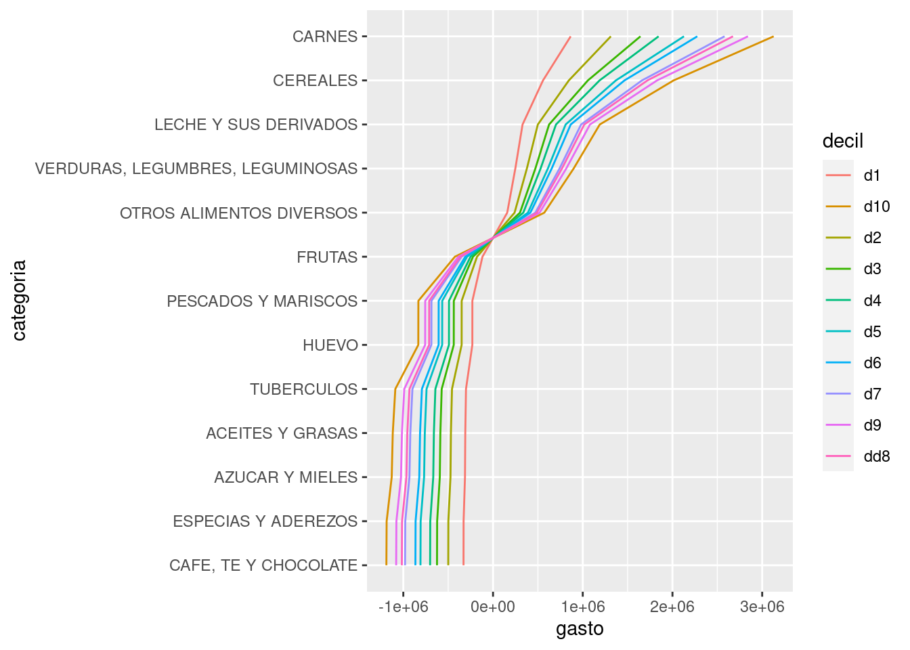 Que podemos comparar con el análisis no centrado:
svd_enigh <- svd(deciles)
tab_1 <- tcrossprod(svd_enigh$u[,1], svd_enigh$v[,1])
colnames(tab_1) <- colnames(deciles)
tab_1 <- tab_1 |> as_tibble() |> mutate(categoria = rownames(deciles)) |>
gather(decil, gasto, d1:d10)
tab_1$categoria <- reorder(tab_1$categoria, tab_1$gasto, mean)
ggplot(tab_1, aes(x=categoria, y=gasto, colour=decil, group=decil)) +
geom_line() + coord_flip()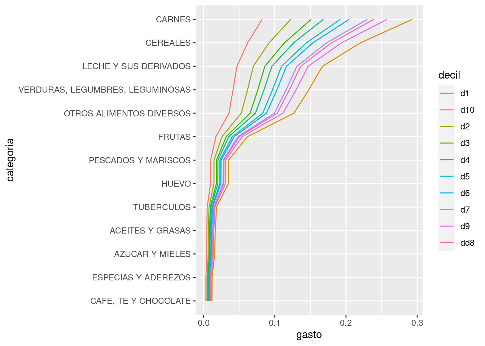 Y aunque los resultados son similares, puede ser más simple entender la primera dimensión del svd no centrado que guarda los efectos de los distintos niveles de gasto de los deciles. En el caso del análisis centrado, tenemos una primera componente que sólo se entiende bien sabiendo los niveles promedio de gasto a lo largo de las categorías. Observación: Quizá una solución más natural es hacer el análisis de componentes principales usando la transpuesta de esta matriz (usa la función prcomp), donde tiene más sentido centrar por categoría de alimento, y pensar que las observaciones son los distintos deciles (que en realidad son agrupaciones de observaciones).
Otros tipos de centrado
Es posible hacer doble centrado, por ejemplo (por renglón y por columna). Discute por qué el doble centrado puede ser una buena idea para los datos del tipo de Netflix.
Reescalando variables
Cuando las columnas tienen distintas unidades (especialmente si las escalas son muy diferentes), conviene reescalar la matriz antes de hacer el análisis centrado o no centrado. De otra forma, parte del análisis intenta absorber la diferencia en unidades, lo cual generalmente no es de interés. - En componentes principales, podemos estandarizar las columnas. - En el análisis no centrado, podemos poner las variables en escala 0-1, por ejemplo, o dividir entre la media (si son variables positivas).
Ejemplo
comp <- princomp(attenu |> select(-station, -event))
comp$loadings[,1]## mag dist accel
## 0.005746131 0.999982853 -0.001129688Y vemos que la dirección de la primera componente es justamente en la dirección de la variable dist (es decir, la primera componente es dist). Esto es porque la escala de dist es más amplia:
apply(attenu |> select(-station), 2, mean)## event mag dist accel
## 14.7417582 6.0840659 45.6032967 0.1542198Esto lo corregimos estandarizando las columnas, o equivalentemente, usando cor = TRUE como opción en princomp
comp <- princomp(attenu |> select(-station, -event), cor = TRUE)
comp$loadings[,1]## mag dist accel
## 0.5071375 0.7156080 -0.4803298